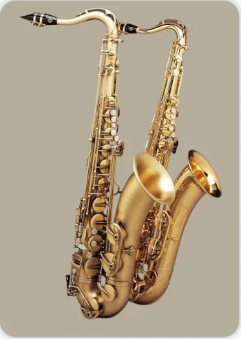
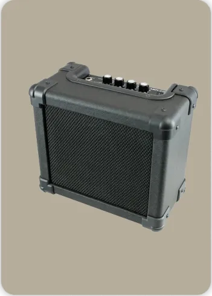

Throat Singing: A Unique Vocalization from Three Cultures
An exploration of the art of throat singing across different cultures, highlighting its unique vocal techniques and cultural significance.
Published: 27 Aug 2023
India’s gift of sound, shared with the world.
Start ExploringSwarWorld (स्वर = sound/note) is India’s initiative to celebrate the world’s most beloved instruments. From sitar to piano, tabla to guitar, our mission is to connect cultures through the power of music. This website is made in India, for music lovers everywhere.
Scientifically, instruments are classified into five main categories: chordophones (strings), aerophones (winds), membranophones (drums), idiophones (self-sounding), and electrophones (electronic).

European and Western musical traditions offer a rich tapestry of instruments, each with a unique history and cultural significance. From the resonant strings of the violin to the powerful notes of brass horns, these instruments have evolved over centuries, shaping classical, folk, and modern music.
European instruments like violin, flute, and horn have influenced orchestral music worldwide. craftsmanship and historical context matter.

Asia’s musical heritage is as diverse as its cultures, with instruments that have shaped traditions for centuries. From the shimmering melodies of the sitar to the soulful resonance of the erhu and the thunderous energy of taiko drums, each carries a story of artistry and identity.
Asian instruments include sitar, erhu, shakuhachi, gamelan, and taiko drums, each with distinct cultural significance.

Middle Eastern music is built on the intricate maqam modal system, using microtones to create melodies full of emotion. The oud, the ancestor of the guitar, carries warm tones that have influenced flamenco, Ottoman classical music, and beyond.
Instruments like oud, qanun, darbuka, and ney form the backbone of Middle Eastern music traditions.
Stringed instruments that produce sound via vibrating strings — sitar, guitar, kora.
 View examples →
View examples →
Wind instruments producing sound from air columns — flutes, horns, reed instruments.
 View examples →Percussion instruments with stretched membranes — drums, tabla, dhol.
 View examples →
View examples →
Instruments relying mainly on electrical sound generation — synthesizers, theremin.
 View examples →Discover the instruments loved by millions across the globe.

The piano is a timeless instrument of melody and harmony, spanning genres from classical to pop.

Guitars carry the soul of modern music — acoustic warmth, electric energy, and universal appeal.

India’s iconic percussion, the tabla, adds rhythm and depth to classical and fusion music alike.

The violin, with its expressive sound, bridges classical concerts, folk traditions, and cinema music.
Browse instruments from different world regions and historical periods. Step into the world of instruments and learn their stories, sounds, and impact on global culture.
Go to Instruments Page
An exploration of the art of throat singing across different cultures, highlighting its unique vocal techniques and cultural significance.
Published: 27 Aug 2023

A comprehensive look at the development of electronic instruments, tracing their origins from early inventions to modern synthesizers.
Published: 30 May 2025

An in-depth exploration of the history and development of brass instruments, from their ancient origins to modern adaptations.
Published: December 15, 2024
Email: info@swarworld.com
Phone: +91 9078085982